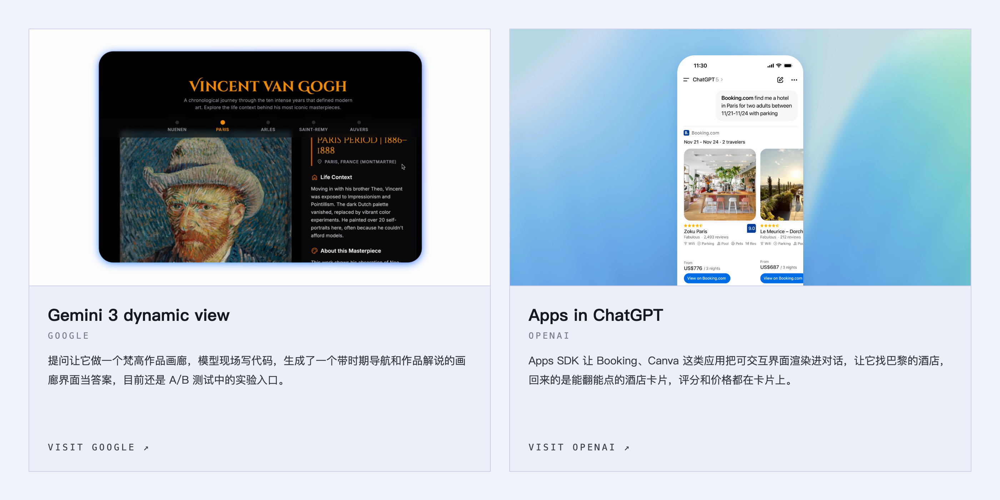
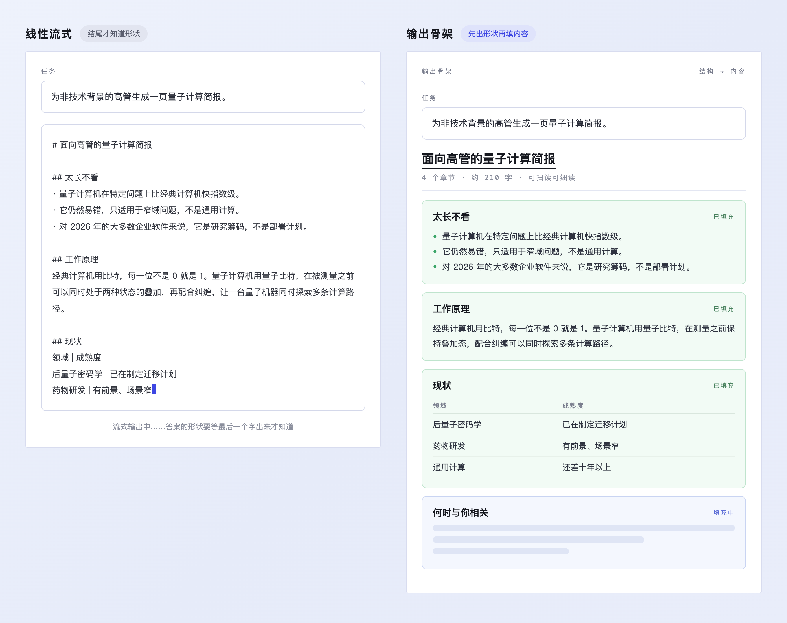
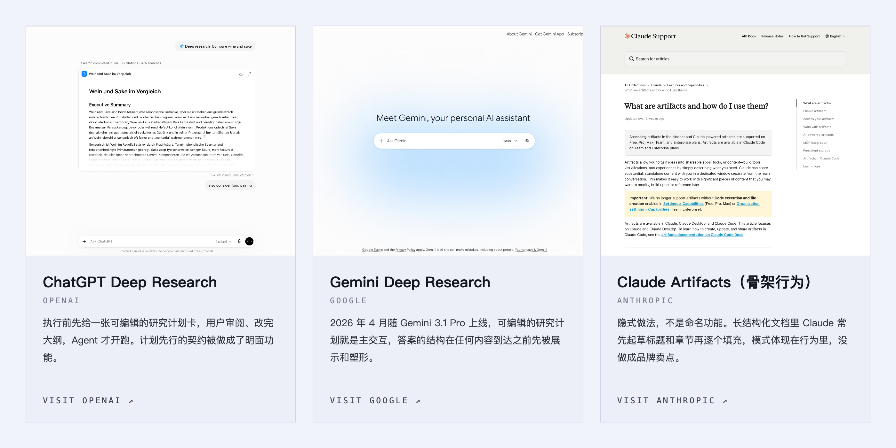
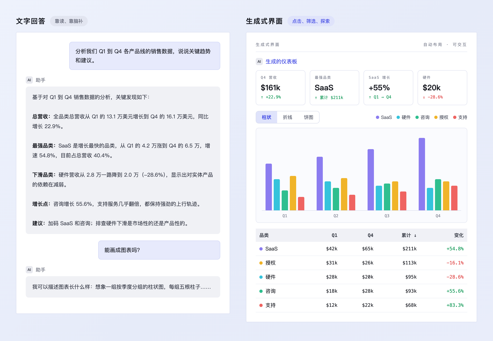
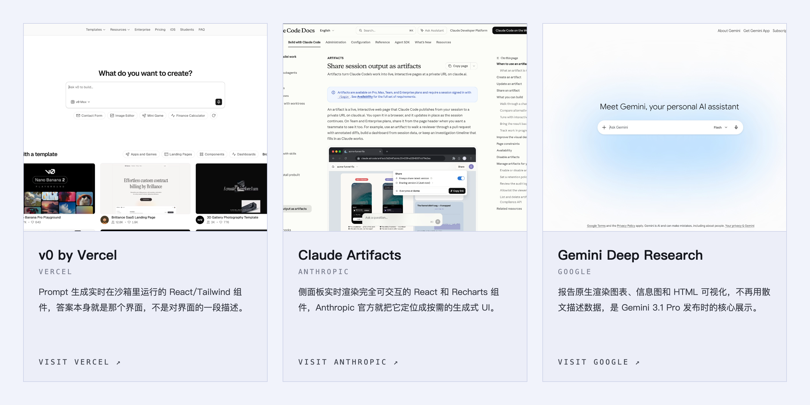
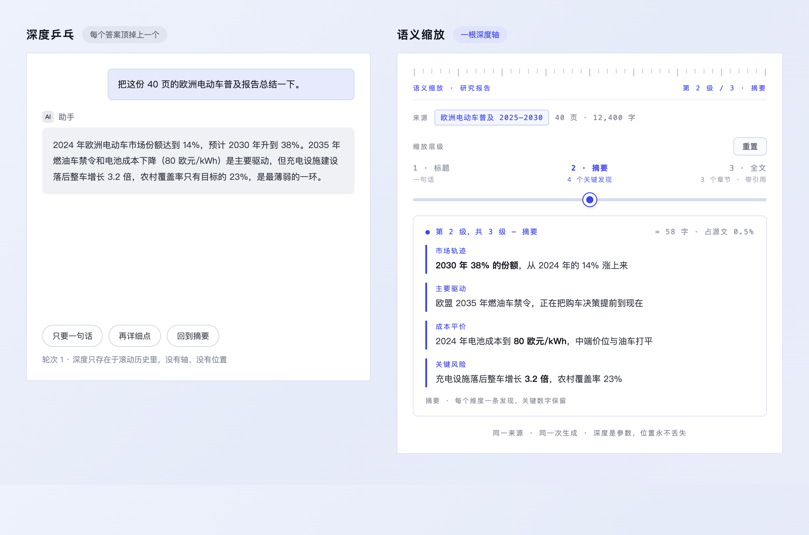
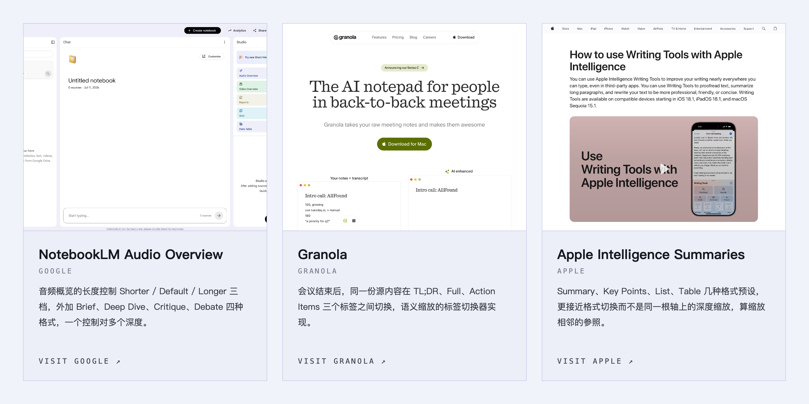

从 2022 年底 ChatGPT 发布算起，大部分对话式 AI 产品的输出一直是同一种呈现方式：不管问的是分析、总结还是方案，回来的都是一段从上往下流的文字，从第一个字跑到最后一个字，等跑完才知道答案到底是三条摘要还是多屏长文。
三年多里模型换了一代又一代，这个呈现方式几乎没动过。
直到 2025 年下半年，前沿的几家 AI 产品开始换方式。2025 年 11 月 Gemini 3 发布时带了一个叫 dynamic view 的实验，模型现场写代码，给一个提问生成一个定制的可交互界面当答案；再早一个月，ChatGPT 上线 Apps SDK，Booking、Canva 这类应用的可交互界面开始渲染在对话里。

AI 产品逐步面向大众化时，为了让不同层次的用户都能，AI 输出的扁平字符流的默认做法，正在被重新设计。如果答案不是从第一个字流到最后一个字呢？
先出结构再填内容
长答案的流式输出，用户在不知道答案是三条要点还是三屏长文的情况下干等。输出骨架的做法是在正文到达之前先把结构声明出来，章节数、格式、预期长度先渲染好，内容再逐步填进各个占位符，用户一秒内就能判断将要收到什么规模的回答。比如一个研究分析的请求，骨架先显示五个章节标题和每章的预期长度，每个占位符标注将要填进什么类型的内容。用户在一个字的正文出现之前就可以跳读、展开折叠章节，甚至拒绝这个结构让模型重来。

ChatGPT 的 Deep Research 在执行前先给一张可编辑的研究计划卡，用户可以审阅和修改大纲再让它开始写。Google 的 Gemini Deep Research 在 2026 年 4 月随 3.1 Pro 把这张计划卡做成了主交互，结构在任何内容到达前就被展示和塑形。Claude Artifacts 的做法比较隐式，长结构化文档中 Claude 常先起草标题和章节再填充，但 Anthropic 没有把这个行为做成品牌功能。
三家做法的分化挺能说明问题：OpenAI 和 Google 把骨架当成了可编辑的契约，Anthropic 把它当成了模型的自发行为，用户对结构的控制权差了一个层级。

风险在于骨架过度承诺，列出来的章节比模型能写好的多，承诺了五节精细分析最后只填了三节注水内容。输出很短或者完全自由发挥的时候，结构预览本身比内容还重，反而碍事。
把答案变成交互组件
分析类的提问被用散文回答，数据模型就藏在文字后面了，没法核验，没法排序，没法筛选，每一个后续操作都得用新 Prompt 重新问。
生成式界面的做法是把答案本身变成可操作的界面组件：统计卡片带增减变化的 Delta 值，图表可以在柱状图和折线图之间切换编码方式，表格可以按任意列排序和筛选。后续问题变成了在答案上面点击，点一个类别就过滤所有视图，不用在聊天框里再写一段描述。每个数据论断都能对着渲染它的图形标记来核验，悬停一个柱子就能看到确切数字，图例标注每个类别，数据模型浮在表面上。

v0 是 Vercel 做的工具，用 Prompt 生成实时在沙箱里运行的 React 组件，答案本身就是可运行的界面。Claude Artifacts 在侧面板实时渲染完全交互的 React 和 Recharts 组件，Anthropic 把它定位成按需的生成式 UI。Gemini Deep Research 在报告里原生渲染图表和 HTML 可视化，2026 年 4 月成为了 Gemini 3.1 Pro 的核心展示。开头提到的 dynamic view 在这几个案例里算走得最远的，现场生成的不只是图表，是仪表盘、计算器这类完整的小应用，同一套体验也开始进 Google 搜索的 AI Mode，不过目前还在 A/B 测试阶段，没有全量放开。这套做法在本账号的 GenUI 建站实录里写过。

风险在于生成的可视化可能夸大确定性。柱状图让差异看起来很显著，换成表格可能只差零点几个百分点。图表的编码选择本身就是一个设计判断，交给模型自动选编码方式需要很谨慎。
用滑块调答案深浅
一个输出深度很少能同时服务快速浏览和细读两种需求。聊天框里想要更短或更长的版本，得重新生成一遍，等流式输出再跑一轮，而且原来读到哪里的位置也丢了。
语义缩放是把同一个答案在三个抽象层级之间用一个滑块连起来：标题（Headline），摘要（Summary），完整细节（Full Detail）。单滑块双向移动，不重新生成内容，不丢失当前位置。每个层级有声明的契约，标题层 1 句话，摘要层 4 个关键发现，完整层 3 个引用章节加精确字数，拖动之前就知道每一档会给什么。持久指示器显示当前位置："第 2 层级，共 3 层，摘要，约 58 字，占源内容 0.5%"。

这个模式跟第一篇写过的渐进式披露类似，都在做分层，区别在于对象：渐进式披露分层的是输入侧的控件复杂度，语义缩放分层的是输出侧的内容深度，两者互为替代。
NotebookLM 的 Audio Overview 有长度控制 Shorter、Default、Longer 三档，外加格式选项 Brief、Deep Dive、Critique、Debate，是单控制多深度的做法。Granola 在会议结束后提供 TL;DR、Full、Action Items 三个标签切换，同一份源内容三种呈现。Apple Intelligence Summaries 提供 Summary、Key Points、List、Table 几种格式预设，严格来说更接近格式切换，不算同一个轴上的深度缩放，算一个相邻的参照。

风险是压缩层级可能藏掉细微差别。摘要层说季度增长强劲，完整层里可能有一个月是下降的，压缩暗示了一种并不存在的完整性。
这三个模式里，输出骨架在 Deep Research 产品线已经做成了可编辑的契约，生成式界面在 v0 和 Claude Artifacts 里跑着。语义缩放的消费级实现还停在标签切换和长度预设这个层级，完整的单滑块三层深度控制还没有产品做出来。
这三个模式解决的都是同一个问题：流式逐字输出，是把模型的生成过程直接当成了用户的阅读过程，生成和阅读不该被当成同一个过程。
1996 年 Ben Shneiderman 在《The Eyes Have It》里给信息可视化定了一条到今天还在引用的原则：先看总览，再缩放和过滤，最后按需看细节。
本文三个模式的内容、原型描述与产品案例来自 Beyond Chat 站点的 Output Skeleton、Generative UI、Semantic Zoom 三个模式页；开头的前沿案例图取自 Google Gemini 3 发布页的 dynamic view 演示视频截帧和 OpenAI Apps in ChatGPT 发布页的官方图片。